Radiadores.
Incorporar radiadores a un baño puede parecerte algo sencillo y sin ninguna complicación adicional.
Nosotros sabemos que no es así, y que, aspectos como las dimensiones del baño – para calcular la potencia que necesitarán los radiadores -, o bien aquellos relacionados con el uso diario del baño y con los consumos, son todos importantes antes de elegir un radiador.
Asesoramos a interioristas y arquitectos en la selección de radiadores para el baño eléctricos, de calefacción de agua, o mixtos, de diseños convencionales, decorativos, con diseños escultóricos, toalleros-radiadores para calentar las toallas al salir del baño, y también radiadores para el hogar.
Ven a verlos a nuestra tienda – showroom, y síguenos en redes sociales para estar al día de las últimas novedades, algunas de las cuales puedes ver a continuación.
Marcas en el showroom
- Irsap
- Runtal
- Scirocco
- Tubes
Y si lo que buscas no está en exposición, lo buscamos en la Bagnoteca.
Novedades 202622

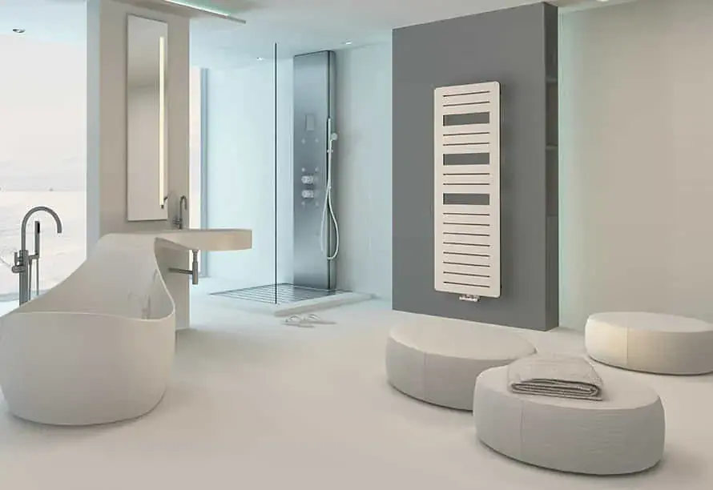
RadiadoresRadiador para baño Page - Irsap
Page redefine el radiador toallero como un elemento arquitectónico, combinando eficiencia térmica y diseño contemporáneo.
Su diseño vertical en tres alturas disponibles (920, 1260 y 1770 mm, ) y líneas limpias, permiten integrarlo en espacios reducidos o ambientes amplios. La colección incluye una variada gama de tonalidades y acabados.
Además de ofrecer confort térmico uniforme y eficiencia energética, actúa como superficie práctica de secado, resolviendo de forma elegante las necesidades funcionales del baño actual.

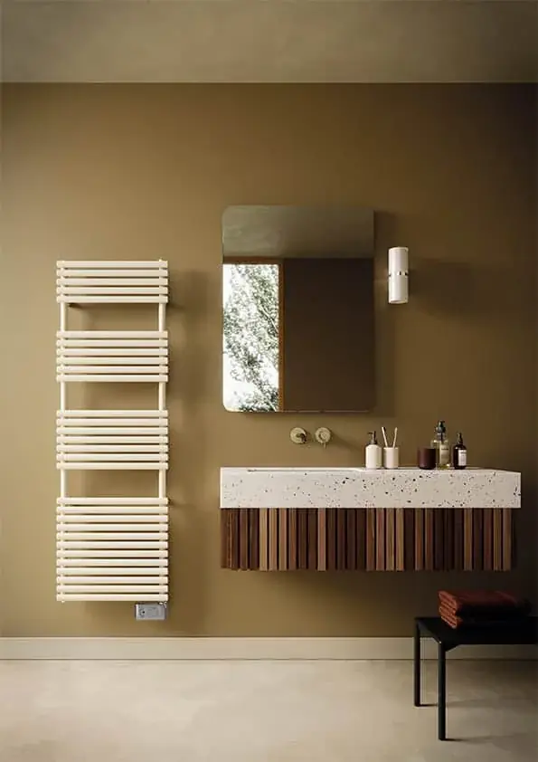
RadiadoresToallero Ellipsis 30_B eléctrico - Irsap
Toallero eléctrico de diseño elíptico, ideal para baños de alto nivel que requieren climatización eficaz.
Su cuerpo estilizado añade volumen y ritmo visual sin sobrecargar el espacio. Disponible en acabados RAL personalizados para integrarse en cualquier propuesta de interiorismo.
Ellipsis 30_B ofrece calor constante y uniforme con control electrónico o WiFi desde la app Irsap NOW garantizando un consumo responsable.
Una solución eficiente, programable y estética, pensada para proyectos donde confort, diseño y control energético son clave.

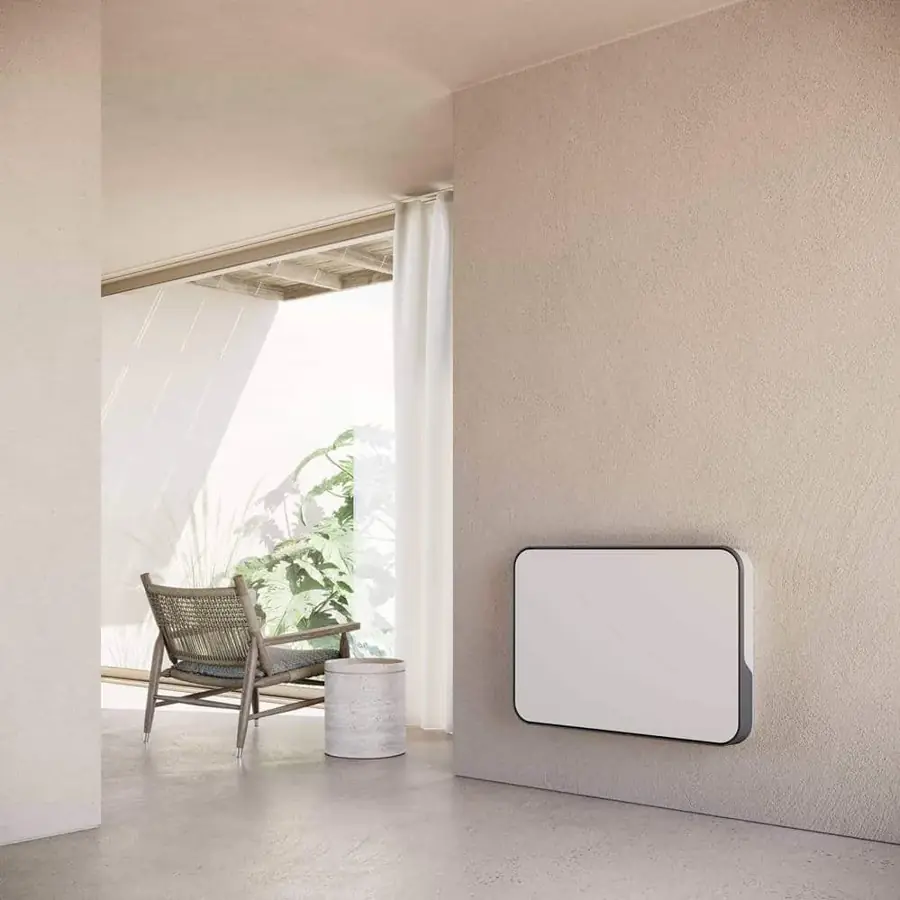
RadiadoresRadiador ventilador para baño Relax Hybrid – Irsap
IRSAP presenta el primer radiador ventilador para baño. Toda una revolución que aúna tecnología y diseño en tan solo 107mm de grosor.
Su tamaño reducido y estética minimalista permite ser integrado en cualquier espacio, siendo un componente adicional de la decoración del lugar.
RELAX HYBRID está disponible en seis tonalidades distintas y tres medidas de anchura, permitiendo una personalización completa. La conexión hidráulica puede configurarse en ambos lados, del mismo modo se ofrece la instalación de un sistema de iluminación LED.
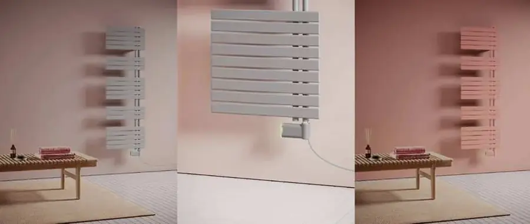
RadiadoresRadiador de baño Soul-S Eléctrico Air - Irsap
El nuevo radiador de IRSAP “SOUL_S ELÉCTRICO AIR” es la fusión perfecta entre sostenibilidad y confort térmico. Todo un avance en el mercado que, lejos de comprometer su estética, brinda los resultados más funcionales al hogar.
La solución de IRSAP es la mejor opción para quienes buscan eficiencia y diseño en su baño. Su tecnología avanzada asegura un calentamiento rápido gracias a su booster de 1000 Watts, y el termostato inalámbrico permite gestionar la temperatura por hora, día o semana.
Con un estilo elegante y detalles funcionales, se adapta a cualquier espacio con su amplia gama de colores.
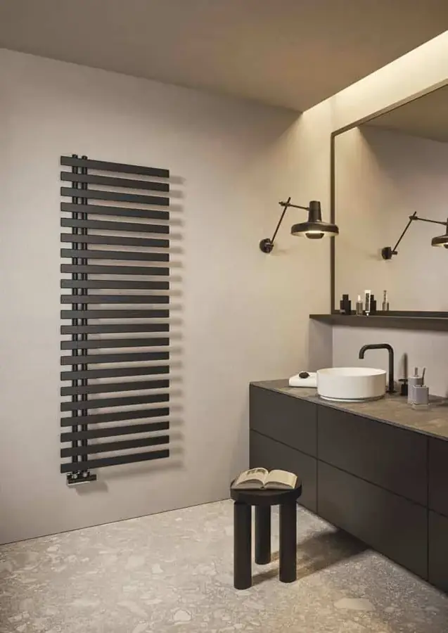
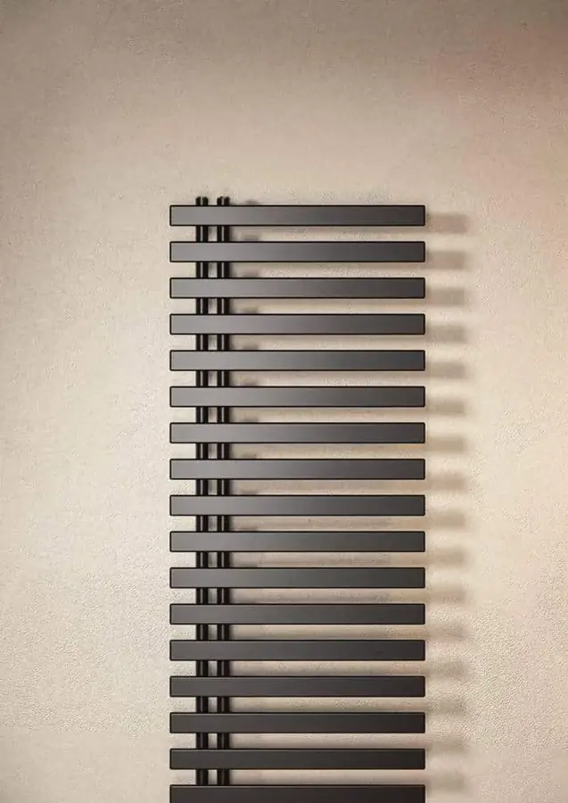
RadiadoresRadiador toallero Kalimba - Irsap
La marca de referencia en calefacción de alta calidad presenta su última innovación en radiadores toalleros “Kalimba”.El nuevo modelo de IRSAP resulta la combinación perfecta entre diseño y funcionalidad.
Este modelo, debido a su opción reversible y a detalles como las aberturas laterales que simplifican el secado de las toallas, es extremadamente versátil, y se puede adaptar a cualquier tipo de decoración.
Su capacidad térmica garantiza una distribución homogénea del calor, permitiendo ser usado en instalaciones de baja temperatura para calentar cualquier área de manera constante y eficiente.
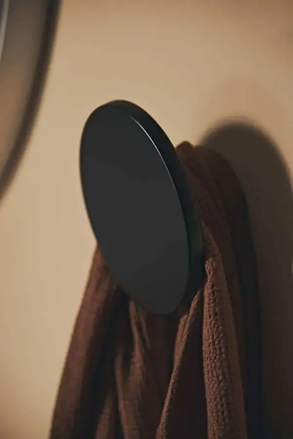
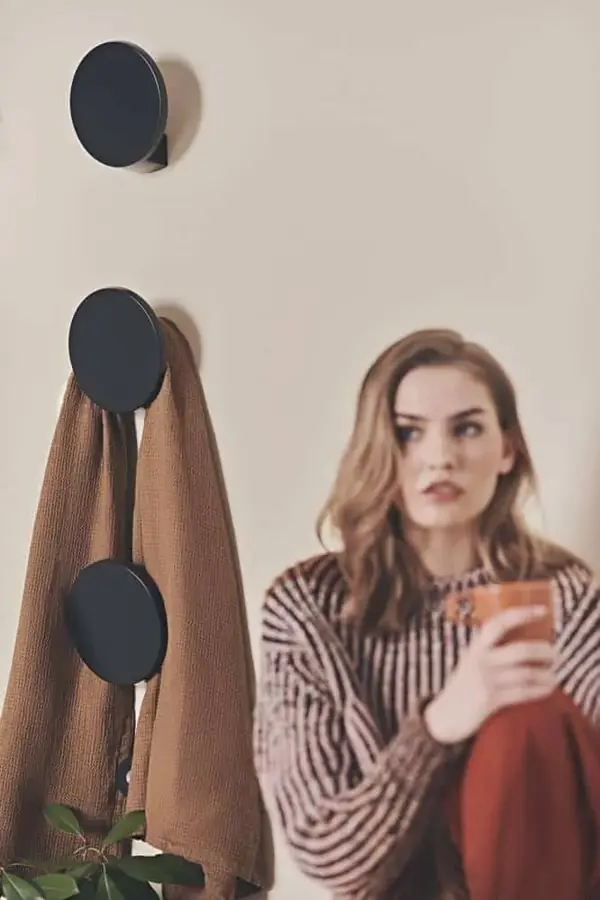
RadiadoresRadiadores DOTS – Tubes
Este elegante radiador circular, con su forma simple pero impactante, es el punto de diseño que faltaba en tu baño para darle un toque sofisticado.
Más que un simple radiador, DOTS es un elemento funcional y estético. Gracias a su bajo voltaje puedes instalarlo en cualquier lugar de tu baño, incluso en zonas húmedas. Además, su sistema de control te permite regular la temperatura a tu gusto.
Con posibilidad de personalización hasta en 140 tonalidades, la nueva colección de Tubes crea composiciones únicas para los baños más exclusivos.
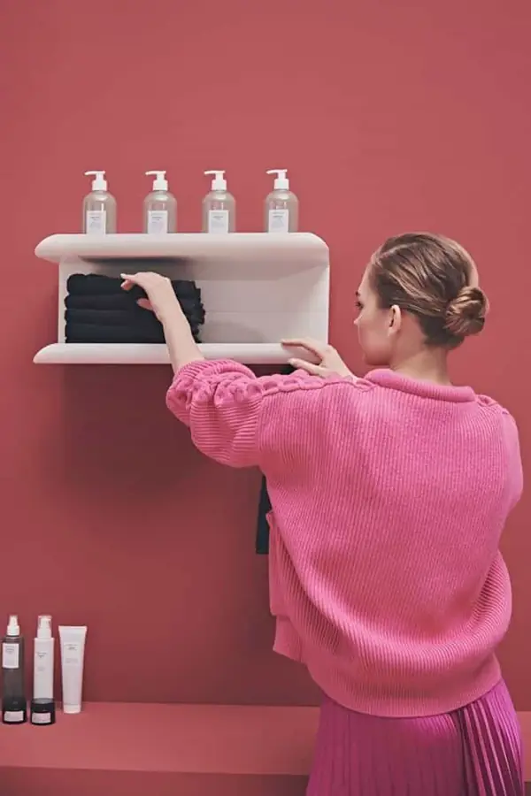
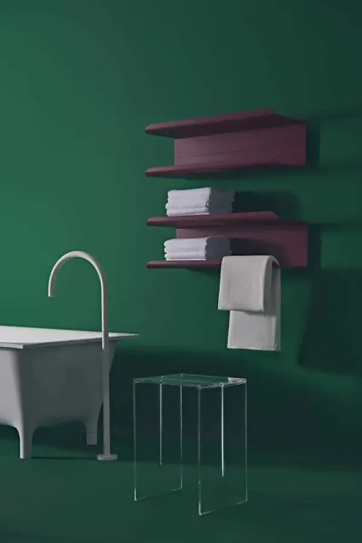
RadiadoresEstantería para baños JJ – Tubes
La nueva estantería JJ de Tubes combina la máxima funcionalidad con un diseño sofisticado, ofreciendo un espacio confortable y perfecto para calentar y organizar toallas en el baño.
Con una superficie acanalada, este estante está disponible en variantes con espacio para toallero en el centro, en uno de sus laterales facilitando así el acceso a la toalla.
Ideal para hoteles, spas y embarcaciones, JJ de Tubes se conecta fácilmente a la red eléctrica mediante termostato o sistemas de control inteligentes.
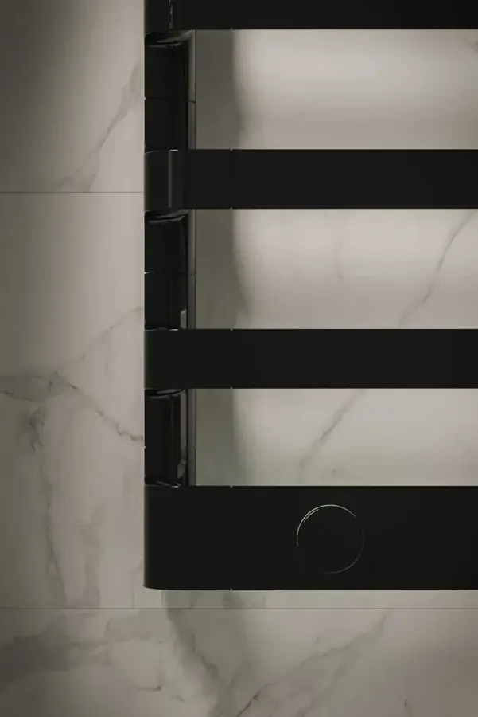
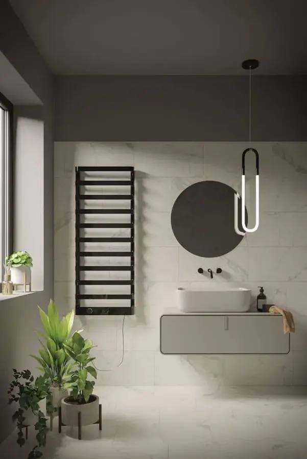
RadiadoresRadiador de diseño para baños Step - Irsap
El radiador STEP de IRSAP, diseñado por Antonio Citterio, combina la máxima innovación tecnológica y la pasión por el detalle.
Su diseño minimalista permite la fácil integración en cualquier entorno, aportando confort y estilo. STEP es personalizable en una amplia gama de colores y acabados, reflejando la perfecta armonía entre tecnología y diseño contemporáneo.
Disponible en 4 versiones (Vertical, Horizontal, Toallero y Eléctrica) la innovación del reconocido diseñador italiano ofrece una calefacción uniforme y constante, ideal para sistemas de baja temperatura que buscan un rendimiento eficiente.
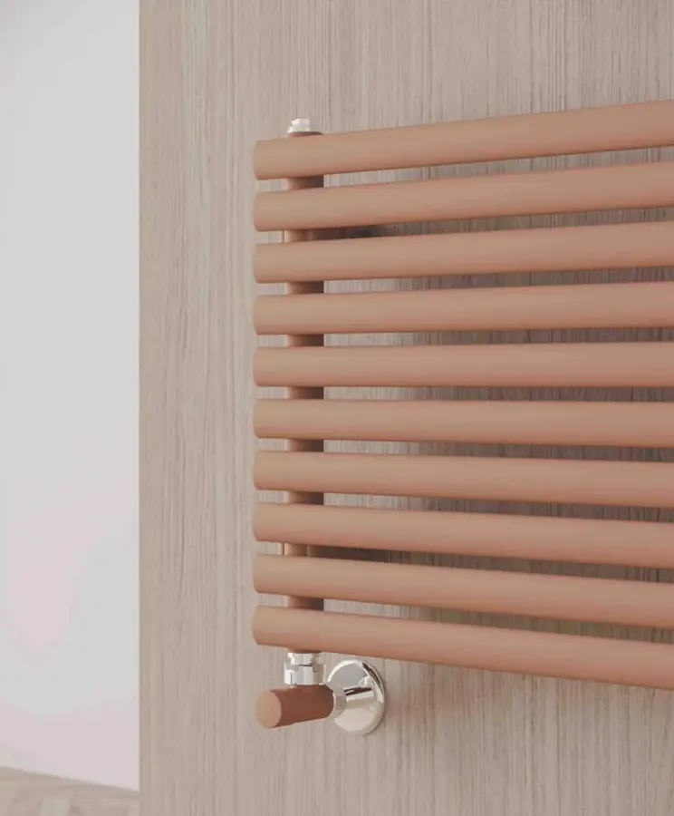
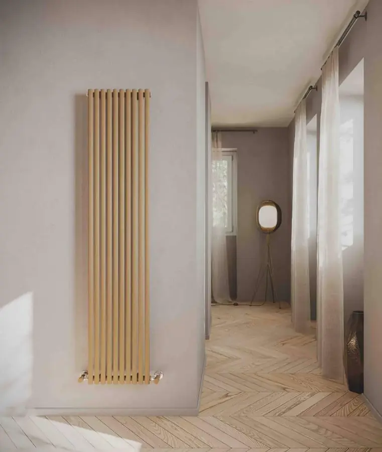
RadiadoresRadiador modular para baños Ellipsis 30 - Irsap
La reconocida marca de radiadores para baños IRSAP presenta su última innovación: el radiador modular ELLIPSIS 30. Este nuevo diseño se distingue por su sofisticación, eficiencia y adaptabilidad. Con elementos de sección elíptica de 30 mm, es ideal tanto para construcciones modernas como para proyectos más antiguos.
Disponible en modelos horizontales y verticales, ELLIPSIS 30 ofrece versiones simples y dobles, funcionando de manera óptima a bajas temperaturas. Su diseño elíptico y la amplia gama de colores disponibles lo convierten en el complemento perfecto para cualquier ambiente.
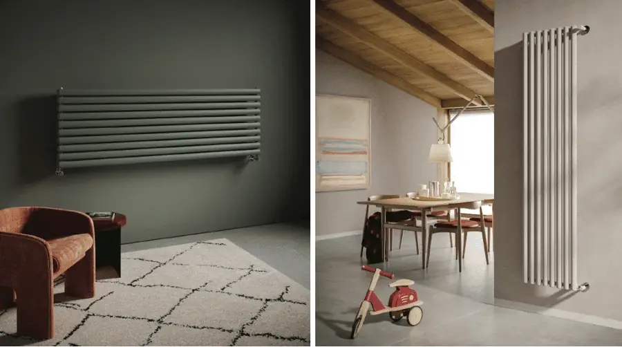
RadiadoresRadiador para baño Ellipsis – Irsap
ISRAP vuelve a sorprender con su nuevo radiador ELLIPSIS. Una pieza que se integra entre la decoración de cualquier estancia por su elegante diseño y adaptabilidad.
Además de su exclusivo aspecto, ELLIPSIS ofrece el máximo confort a tu espacio gracias a la calidad de sus prestaciones y su versatilidad de funcionamiento.
La pieza está disponible en versión horizontal y vertical, así como en varias medidas y colores.
Un radiador con formas elípticas que ha sido creado pensando en el mínimo detalle para aquellos que buscan diseño sin renunciar a las mejores calidades.
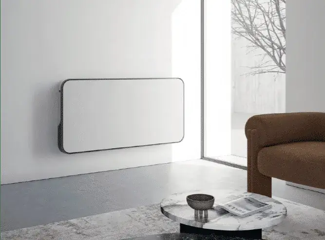
RadiadoresRadiador de baño Relax Hybrid - Irsap
Relax Hybrid es el encuentro entre estética y tecnología de alto nivel condensado en 107mm. Una propuesta de Irsap marca líder en la categoría radiadores, dada su gran calidad, funcionalidad y estética.
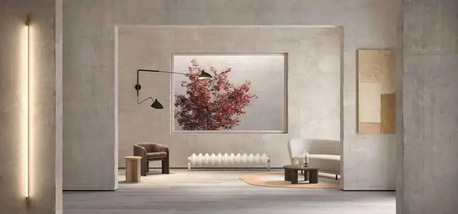
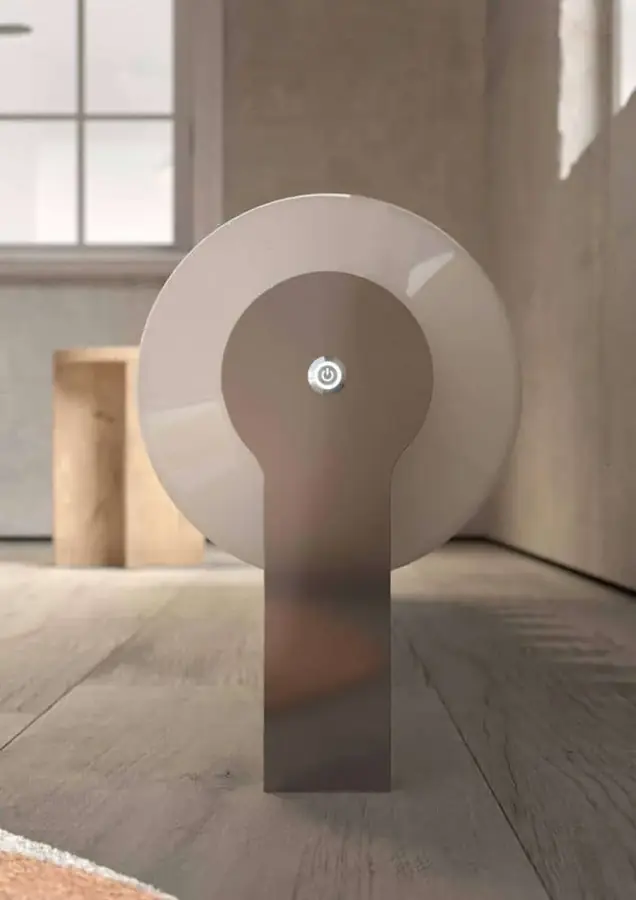
RadiadoresRadiador de baño Milano Horizontal – Tubes
Milano Horizontal es un radiador de baño inconfundible, gracias a sus formas majestuosas, de carácter escultórico. Muy aconsejable para aquellos espacios de baño complicados, que necesitan un radiador que se adapte a ellos y no al revés.
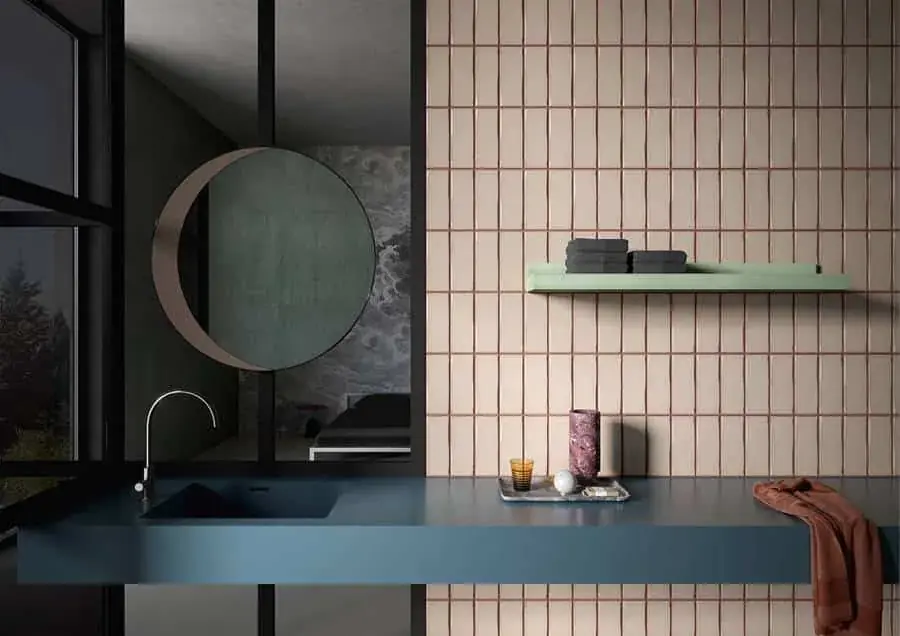
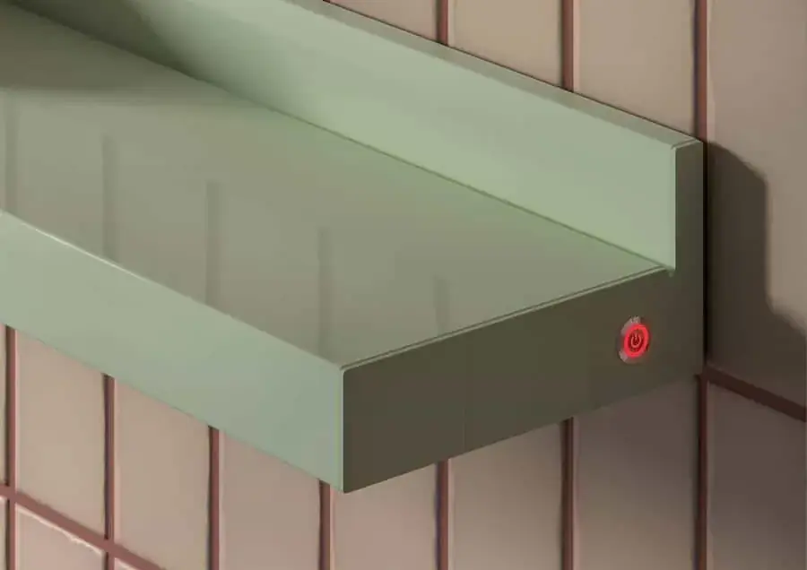
RadiadoresRadiador de diseño Rift/reverse – Tubes
Un radiador de diseño exclusivo de una alta funcionalidad. Permite apoyar toallas dobladas, para mantenerlas calientes. Incorpora termostato wireless para que el control del radiador sea total. Sus dimensiones lo hacen muy adecuado para baños de distintas dimensiones.
- Radiadores
Nuevo sistema calefacción para el baño Now – Irsap
Compromiso y sostenibilidad, sin perder de vista el confort y la funcionalidad, IRSAP ha creado NOW, un sistema de calefacción inteligente y ecológica para el hogar. Una nueva forma de entender la experiencia de uso que permite controlar las distintas temperaturas del hogar desde tu teléfono móvil.
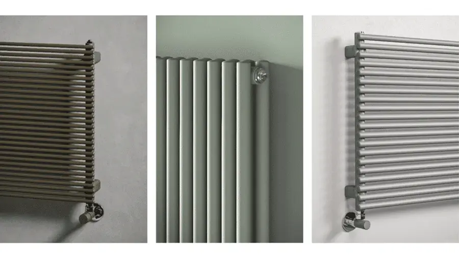
RadiadoresRadiador decorativo para baños Arpa – Irsap
Arpa de ISAP es un radiador para baño personalizable capaz de, gracias a su diseño, dotar de una personalidad única al espacio en el que se encuentra, de una forma completamente integrada. Además de por su diseño, Arpa es una solución térmica absolutamente eficiente, sean cuales sean las dimensiones del espacio.
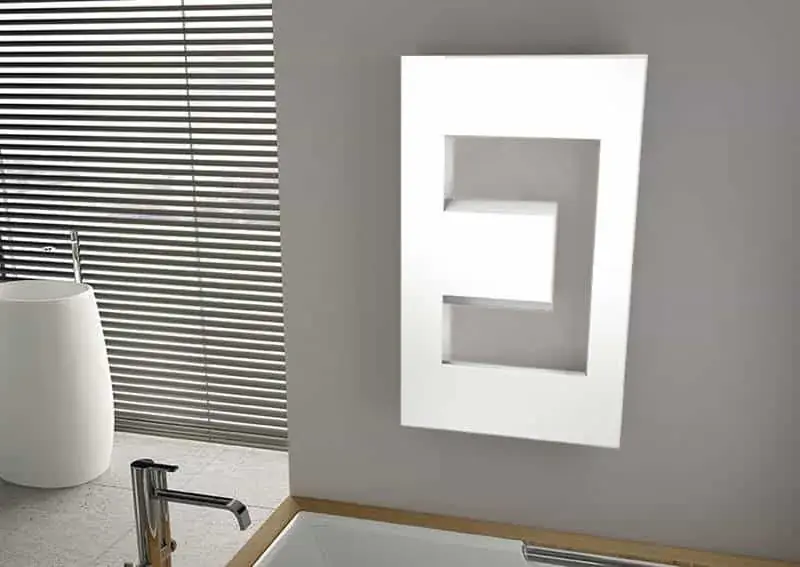
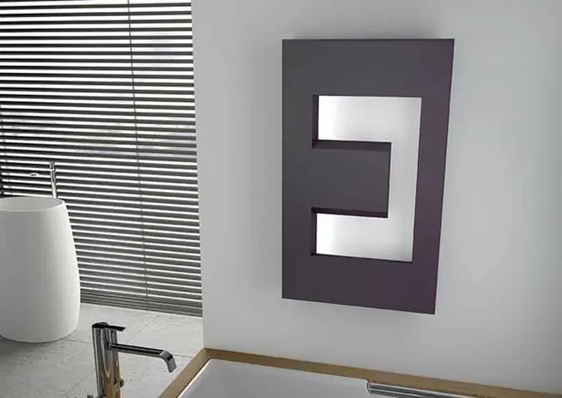
RadiadoresRadiador toallero para baño Dedalo – Irsap
Como comprobarás con el modelo Dédalo, el diseño de un radiador para el baño es hoy un aspecto absolutamente trascendente.
En IRSAP lo saben, y de la mano de un equipo de diseñadores de primera fila, han creado esta nueva “pieza escultórica”, en la que estética y funcionalidad máxima se funden.
Un radiador toallero que destaca por la sensación de estar suspendido en el aire, la facilidad de colocación de toallas (gracias a su separación de la pared), así como por el juego de luces y sombras que su moderno diseño provoca.
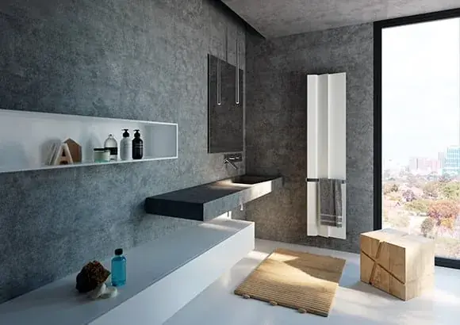
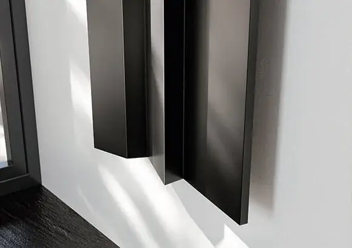
RadiadoresRadiadores de diseño para baños Android - Antrax
En el mundo del baño moderno, al igual que sucede con el de los pavimentos y revestimientos, existe una corriente estética, que además de aportar la más actual tecnología en cuanto a sostenibilidad energética, quiere acercarse al arte contemporáneo de la mano de diseños que bien podrían ser piezas artísticas.
Este es el caso del nuevo radiador Android de la firma Antrax. Diseñado por el afamado arquitecto Daniel Libeskind, este radiador para baño bien podría considerado como escultura minimalista en la que el color y la geometría expresiva fueran sus principales elementos distintivos.
Si a lo anterior le sumas una tecnología de última generación que potencia la sostenibilidad energética de la mano del uso de poca agua y gran capacidad de estar con rapidez a pleno rendimiento; sus 200 opciones en cuanto a colores; sus dos modelos (standard e IQ); un toallero accesorio; y la posibilidad de instalarlo tanto horizontal como verticalmente, ya tienes una pieza icónica capaz de sorprender a los más sibaritas.
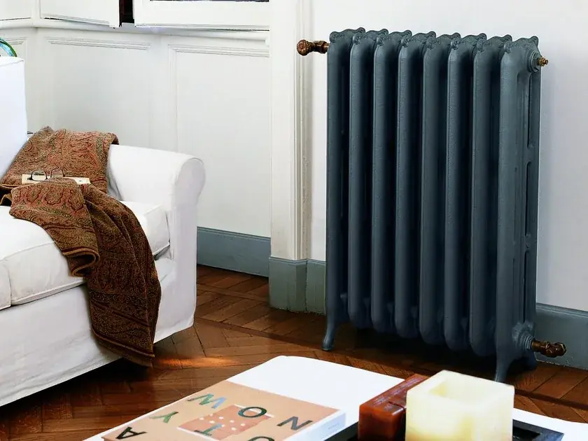
RadiadoresRadiador de baño de hierro fundido Tiffany
¿Buscas es un radiador para baño que te recuerde a los de una época pasada? En el nuevo radiador Tiffany tienes una perfecta opción.
Si al hecho de estar fabricado en hierro fundido le sumas su generosidad en cuanto a decoraciones, junto a las válvulas de latón que incluye, tienes un accesorio para baño perfecto para crear una estética vintage equilibrada y concreta.
A lo anterior le debes añadir su óptimo rendimiento térmico, sus 65 tonos de gama de colores, sus dos opciones de alturas, 660-955 mm y 750 – 950 mmm, así como sus dos posibilidades en cuanto a número de columnas (2 o 3), que le facilitan adaptarse a espacios más pequeños.
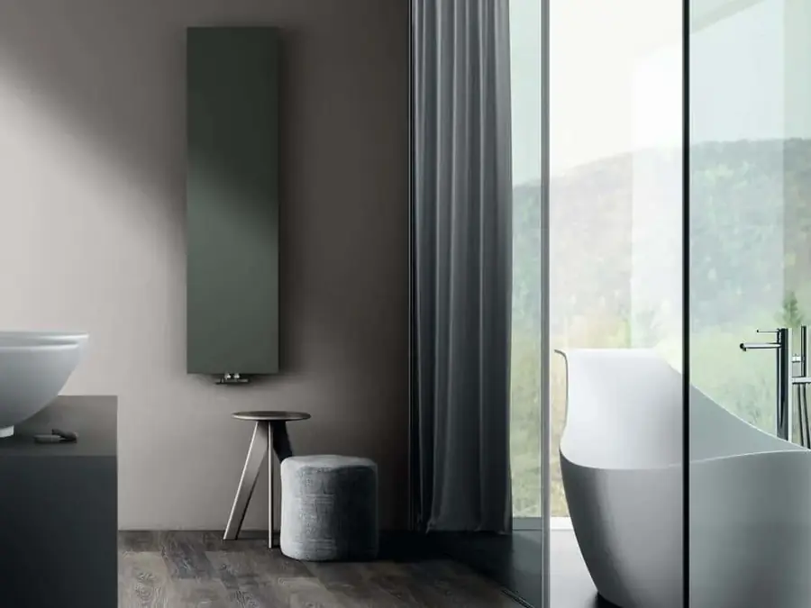
RadiadoresRadiadores para baños Sunshine – Scirocco
¿Alguna vez habías pensado que un radiador para el cuarto de baño, además de la función de calentar el espacio y las tollas, puede aportar un componente extra que potencie la estética del conjunto?
Es probable que no, y por ello hemos seleccionado esta novedad.
Un radiador ultra plano, su grosor es de tan solo 14 milímetros, que puede ser instalado en vertical u horizontal, que a algunos puede recordarles un cuadro de lo más minimalista; fabricado en acero, el cual, además de calentar la estancia, añade un plus de diseño a todo el conjunto.
Disponible en varios colores, y en hasta 16 tamaños, este nuevo toallero hidráulico, incorpora además varios accesorios tremendamente útiles: un gancho de albornoz vertical, un toallero y un sostenedor de toalla horizontal.
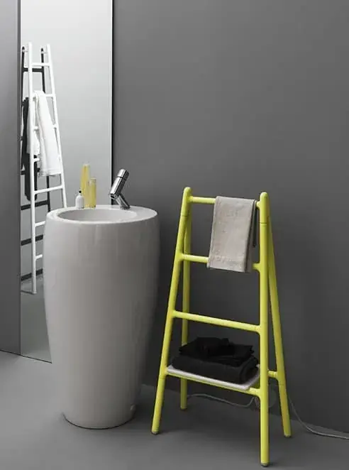
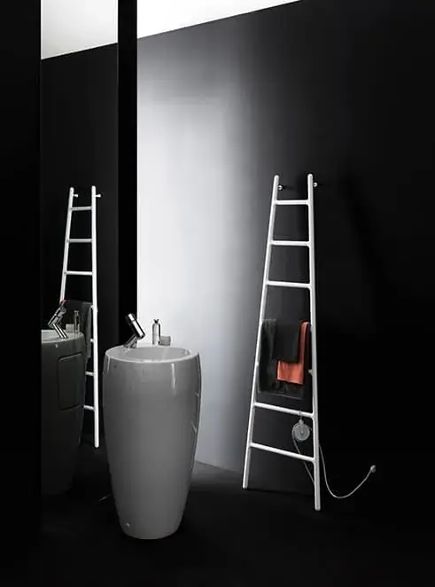
RadiadoresCalentadores para el cuarto de baño Scaleta - Tubes Radiatori
¿Quién dijo que en el cuarto de baño no cabe una escalera? En cuanto veas las características de diseño de este calentador de toallas, diseñado por Elisa Giovannoni, de la firma Tubes Radiatori, entenderás que esa afirmación no podía estar más equivocada.
Scaletta es un calentador de toallas que poco tiene que ver con la imagen que viene a nuestra mente cuando pensamos en un calentador de diseño para el cuarto de baño.
Un calentador en forma de escalera, que no necesita de instalación, fácil de colocar, y extremadamente sencillo de desplazar cuando sea necesario. De alimentación eléctrica, y fabricado en aluminio, lo tienes disponible en dos versiones diferentes: la de pared y la de suelo freestanding. Junto a lo anterior, también lo puedes embellecer, en caso de necesitarlo, con colgadores porta esponjas.
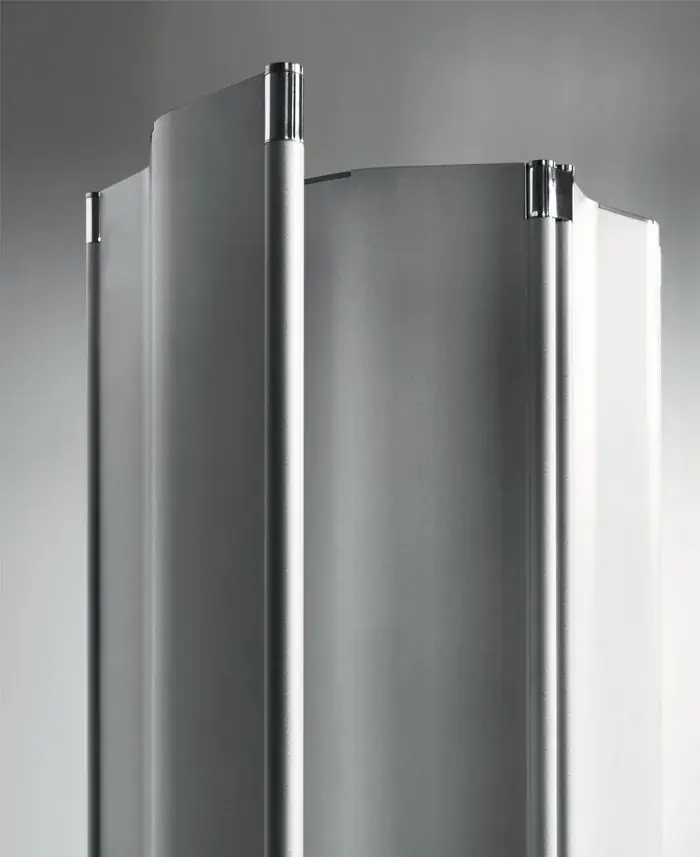
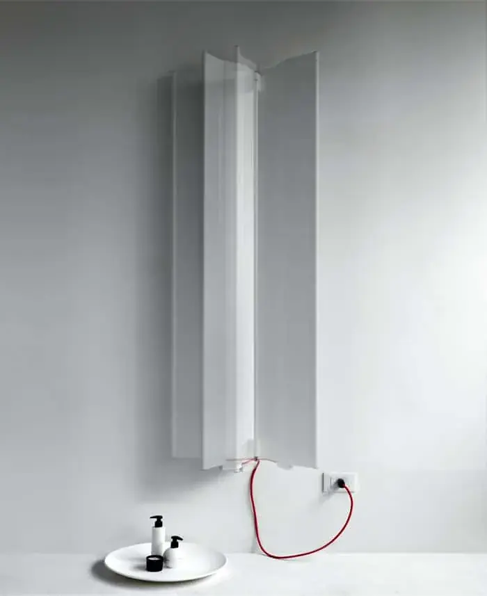
RadiadoresRadiadores y calentadores para baños Origami - Tubes Radiatori
Hoy te presentamos esta nueva colección de Radiadores para el cuarto de baño, de la mano de una de las marcas con las que colaboramos.
Radiador Origami, que así es como se llama la colección, está diseñado por la marca Tubes radiatori, y en particular por el diseñador Alberto Meda.
Las características de este nuevo radiador para el baño son varias y aquí te destacamos: calidad de protección, calidad de temperatura, y diseño moderno que delinea el ambiente con elegancia y sutileza, de cara a crear y potenciar la intimidad del cuarto de baño.
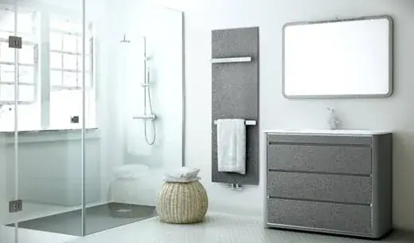
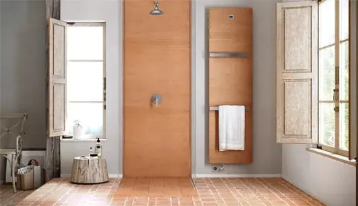
RadiadoresRadiadores eléctricos para baños Vulcano Electric - Fiora
Óptimos para ser instalados en diferentes espacios de una vivienda, estos nuevos radiadores eléctricos son perfectos para lugares donde la instalación de agua es inexistente.
El nuevo diseño te ofrece diversas funcionalidades: sistema para controlar la temperatura, texturas singulares y originales al tacto –pizarra, silex rústica, rosas, semillas e hilos-, y medidas de 500 mm de anchura x 1200, 1500 y 1800 mm de altura.